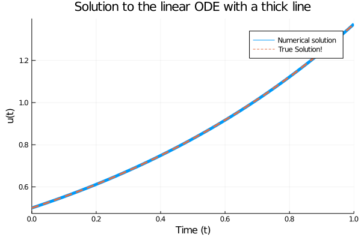
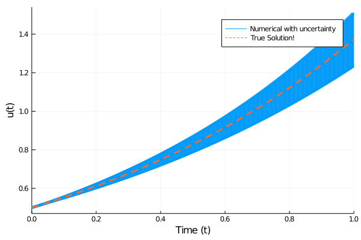
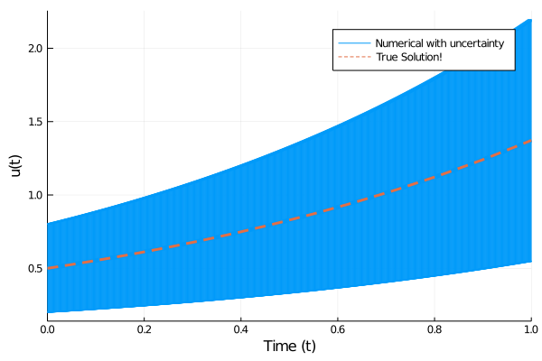

using DifferentialEquations
α = 1.01
u0 = 1/2 # initial value
tspan = (0.0, 1.0) # range of values(0.0, 1.0)July 21, 2020
I’ve been getting into the Julia ecosystem a little (turns out there’s a lot of tutorials you get to watch when doing the dishes), and I’ve been meaning to get some hands on experience. Today, I’d like to reproduce Mosè Giordano’s gist example, which I first saw in this JuliaCon talk by Stefan Karpinski. I think it really illustrates Alan Edelman’s points on Julia’s composability from the talk I linked last time.
What we’ll do today is combine a simple example of an ODE solution with an uncertainty package, and see how easy or difficult it becomes using Julia.
Let’s try to use Julia’s DifferentialEquations.jl package to solve the simple system:
\[\frac{du}{dt} = \alpha u\]
(0.0, 1.0)Simple enough! Let’s define the derivative function. Note that it seems like the derivative’s signature as accepted by DifferentialEquations.ODEProblem has changed since Mosè Giordano wrote his gist.
ODEProblem with uType Float64 and tType Float64. In-place: false timespan: (0.0, 1.0) u0: 0.5
These explicit reprs are pretty darn cool, to be honest. Let’s get to solving it, as seen in the example:
retcode: Success
Interpolation: specialized 4th order "free" interpolation
t: 17-element Array{Float64,1}:
0.0
0.012407826196308189
0.04250125658161484
0.08178046092620397
0.12887379439591745
0.18409790041494495
0.24627449404376492
0.3147928829168652
0.38859624030646006
0.46686165530000767
0.5487159959104151
0.6334345501790717
0.7203628343994752
0.8089578125953629
0.8987653123338385
0.9894159840028138
1.0
u: 17-element Array{Float64,1}:
0.5
0.5063053789114713
0.5219304636285521
0.5430526974619144
0.5695067474049924
0.6021743238204087
0.6412025113764279
0.687147458356146
0.7403257567387032
0.8012222468290549
0.8702767411264873
0.9480213225441934
1.0350184806191094
1.131902913018661
1.239373221095387
1.3582036259485553
1.3728005076225749And now we can use Plots.jl to plot the solution. I adapted the docs for DifferentialEquations to do that.
using Plots
plot(sol,linewidth=5,title="Solution to the linear ODE with a thick line",
xaxis="Time (t)",yaxis="u(t)",label="Numerical solution")
plot!(sol.t, t->0.5*exp(1.01t),lw=3,ls=:dash,label="True Solution!")
And that’s all neat. On to the main course!
For convenience (and practice!), we’ll wrap our previous computation in a function:
function compute(α, u0, tspan)
f(u, p, t) = α * u
noisy_prob = ODEProblem(f, u0, tspan)
noisy_sol = solve(noisy_prob, Tsit5(), reltol=1e-8, abstol=1e-8)
noisy_sol # Julia returns the last statement in a function
endcompute (generic function with 1 method)And now we’ll add Measurements.jl and input a slightly noisy value for the \(\alpha\) constant, using \(\pm\) (typed in Jupyter as \pm<TAB>):
using Measurements
noisy_sol =compute(1.01 ± 0.1,
1/2 ± 0, # this had to be the same type, or we'd get an exception:
(0.0, 1.0)
)retcode: Success
Interpolation: specialized 4th order "free" interpolation
t: 17-element Array{Float64,1}:
0.0
0.012407826196308189
0.042501278333560696
0.0817804940926822
0.12887384498704435
0.18409796286152927
0.24627457447456758
0.31479297816557983
0.3885963515160237
0.4668617724420117
0.5487161305960653
0.6334346972152323
0.7203630000154827
0.808957991167541
0.8987655040395068
0.9894161889652783
1.0
u: 17-element Array{Measurement{Float64},1}:
0.5 ± 0.0
0.50631 ± 0.00063
0.5219 ± 0.0022
0.5431 ± 0.0044
0.5695 ± 0.0073
0.602 ± 0.011
0.641 ± 0.016
0.687 ± 0.022
0.74 ± 0.029
0.801 ± 0.037
0.87 ± 0.048
0.948 ± 0.06
1.035 ± 0.075
1.132 ± 0.092
1.24 ± 0.11
1.36 ± 0.13
1.37 ± 0.14And you can already see the uncertainties propagate onwards! The further in time, the more effect that slight discrepancy in the value of \(\alpha\) (or \(R_0\), these days…) will have. That makes sense!
The amazing thing is that I can stick noisy_sol right into the plot command of Plots.jl:
plot(noisy_sol, lab="Numerical with uncertainty",
linewidth=5, xaxis="Time (t)",yaxis="u(t)",
)
plot!(sol.t, t->0.5*exp(1.01t),lw=3,ls=:dash,label="True Solution!")
Just like that! And that’s just a little magical to me.
We can also put an uncertainty on the initial condition - we rarely know those with perfect accuracy.
noisy_sol =compute(1.01, # interestingly the constant can be a "precise" float
1/2 ± 0.3,
(0.0, 1.0)
)retcode: Success
Interpolation: specialized 4th order "free" interpolation
t: 17-element Array{Float64,1}:
0.0
0.012407826196308189
0.042501278333560696
0.0817804940926822
0.12887384498704435
0.18409796286152927
0.24627457447456758
0.31479297816557983
0.3885963515160237
0.4668617724420117
0.5487161305960653
0.6334346972152323
0.7203630000154827
0.808957991167541
0.8987655040395068
0.9894161889652783
1.0
u: 17-element Array{Measurement{Float64},1}:
0.5 ± 0.3
0.51 ± 0.3
0.52 ± 0.31
0.54 ± 0.33
0.57 ± 0.34
0.6 ± 0.36
0.64 ± 0.38
0.69 ± 0.41
0.74 ± 0.44
0.8 ± 0.48
0.87 ± 0.52
0.95 ± 0.57
1.04 ± 0.62
1.13 ± 0.68
1.24 ± 0.74
1.36 ± 0.81
1.37 ± 0.82plot(noisy_sol, lab="Numerical with uncertainty",
linewidth=5, xaxis="Time (t)",yaxis="u(t)",
)
plot!(sol.t, t->0.5*exp(1.01t),lw=3,ls=:dash,label="True Solution!")
We can also combine the uncertainties to our heart’s content! I’m choosing to run this with a very large uncertainty on the constant, to illustrate the point.
And here’s the point I wanted to make.
Nobody wrote uncertainty support for DifferentialEquations.jl. Here’s a search for references to measurements in that package - nil. It just popped out of Julia’s composable type system.
The plotting part is admittedly custom and can be found here. But still - imagine, in Python, combining scipy.integrate.odeint, uncertainties and maybe even astropy.units or pint, or what have you.
Here it “just works”. Magic!
Actually, speaking of unit packages…
And if we try…
Well, maybe…
Maybe, maybe, maybe…
noisy_sol =compute(1.01u"1/s",
0.5u"m" ± 40u"cm", # I had to cheat a little here
(0.0u"s", 1.0u"s"),
)MethodError: MethodError: no method matching Float64(::Measurement{Float64})
Closest candidates are:
Float64(::Real, !Matched::RoundingMode) where T<:AbstractFloat at rounding.jl:200
Float64(::T) where T<:Number at boot.jl:715
Float64(!Matched::Int8) at float.jl:60
...
MethodError: no method matching Float64(::Measurement{Float64})
Closest candidates are:
Float64(::Real, !Matched::RoundingMode) where T<:AbstractFloat at rounding.jl:200
Float64(::T) where T<:Number at boot.jl:715
Float64(!Matched::Int8) at float.jl:60
...
Stacktrace:
[1] convert(::Type{Quantity{Float64,𝐓,Unitful.FreeUnits{(s,),𝐓,nothing}}}, ::Quantity{Measurement{Float64},𝐓,Unitful.FreeUnits{(s,),𝐓,nothing}}) at /home/dominik/.julia/packages/Unitful/MOEUx/src/conversion.jl:110
[2] ode_determine_initdt(::Quantity{Measurement{Float64},𝐋,Unitful.FreeUnits{(m,),𝐋,nothing}}, ::Quantity{Float64,𝐓,Unitful.FreeUnits{(s,),𝐓,nothing}}, ::Float64, ::Quantity{Float64,𝐓,Unitful.FreeUnits{(s,),𝐓,nothing}}, ::Float64, ::Float64, ::typeof(DiffEqBase.ODE_DEFAULT_NORM), ::ODEProblem{Quantity{Measurement{Float64},𝐋,Unitful.FreeUnits{(m,),𝐋,nothing}},Tuple{Quantity{Float64,𝐓,Unitful.FreeUnits{(s,),𝐓,nothing}},Quantity{Float64,𝐓,Unitful.FreeUnits{(s,),𝐓,nothing}}},false,DiffEqBase.NullParameters,ODEFunction{false,var"#f#9"{Quantity{Float64,𝐓^-1,Unitful.FreeUnits{(s^-1,),𝐓^-1,nothing}}},LinearAlgebra.UniformScaling{Bool},Nothing,Nothing,Nothing,Nothing,Nothing,Nothing,Nothing,Nothing,Nothing,Nothing,Nothing,Nothing},Base.Iterators.Pairs{Union{},Union{},Tuple{},NamedTuple{(),Tuple{}}},DiffEqBase.StandardODEProblem}, ::OrdinaryDiffEq.ODEIntegrator{Tsit5,false,Quantity{Measurement{Float64},𝐋,Unitful.FreeUnits{(m,),𝐋,nothing}},Nothing,Quantity{Float64,𝐓,Unitful.FreeUnits{(s,),𝐓,nothing}},DiffEqBase.NullParameters,Float64,Float64,Float64,Array{Quantity{Measurement{Float64},𝐋 𝐓^-1,Unitful.FreeUnits{(m, s^-1),𝐋 𝐓^-1,nothing}},1},ODESolution{Quantity{Measurement{Float64},𝐋,Unitful.FreeUnits{(m,),𝐋,nothing}},1,Array{Quantity{Measurement{Float64},𝐋,Unitful.FreeUnits{(m,),𝐋,nothing}},1},Nothing,Nothing,Array{Quantity{Float64,𝐓,Unitful.FreeUnits{(s,),𝐓,nothing}},1},Array{Array{Quantity{Measurement{Float64},𝐋 𝐓^-1,Unitful.FreeUnits{(m, s^-1),𝐋 𝐓^-1,nothing}},1},1},ODEProblem{Quantity{Measurement{Float64},𝐋,Unitful.FreeUnits{(m,),𝐋,nothing}},Tuple{Quantity{Float64,𝐓,Unitful.FreeUnits{(s,),𝐓,nothing}},Quantity{Float64,𝐓,Unitful.FreeUnits{(s,),𝐓,nothing}}},false,DiffEqBase.NullParameters,ODEFunction{false,var"#f#9"{Quantity{Float64,𝐓^-1,Unitful.FreeUnits{(s^-1,),𝐓^-1,nothing}}},LinearAlgebra.UniformScaling{Bool},Nothing,Nothing,Nothing,Nothing,Nothing,Nothing,Nothing,Nothing,Nothing,Nothing,Nothing,Nothing},Base.Iterators.Pairs{Union{},Union{},Tuple{},NamedTuple{(),Tuple{}}},DiffEqBase.StandardODEProblem},Tsit5,OrdinaryDiffEq.InterpolationData{ODEFunction{false,var"#f#9"{Quantity{Float64,𝐓^-1,Unitful.FreeUnits{(s^-1,),𝐓^-1,nothing}}},LinearAlgebra.UniformScaling{Bool},Nothing,Nothing,Nothing,Nothing,Nothing,Nothing,Nothing,Nothing,Nothing,Nothing,Nothing,Nothing},Array{Quantity{Measurement{Float64},𝐋,Unitful.FreeUnits{(m,),𝐋,nothing}},1},Array{Quantity{Float64,𝐓,Unitful.FreeUnits{(s,),𝐓,nothing}},1},Array{Array{Quantity{Measurement{Float64},𝐋 𝐓^-1,Unitful.FreeUnits{(m, s^-1),𝐋 𝐓^-1,nothing}},1},1},OrdinaryDiffEq.Tsit5ConstantCache{Float64,Float64}},DiffEqBase.DEStats},ODEFunction{false,var"#f#9"{Quantity{Float64,𝐓^-1,Unitful.FreeUnits{(s^-1,),𝐓^-1,nothing}}},LinearAlgebra.UniformScaling{Bool},Nothing,Nothing,Nothing,Nothing,Nothing,Nothing,Nothing,Nothing,Nothing,Nothing,Nothing,Nothing},OrdinaryDiffEq.Tsit5ConstantCache{Float64,Float64},OrdinaryDiffEq.DEOptions{Float64,Float64,Float64,Quantity{Float64,𝐓,Unitful.FreeUnits{(s,),𝐓,nothing}},typeof(DiffEqBase.ODE_DEFAULT_NORM),typeof(LinearAlgebra.opnorm),CallbackSet{Tuple{},Tuple{}},typeof(DiffEqBase.ODE_DEFAULT_ISOUTOFDOMAIN),typeof(DiffEqBase.ODE_DEFAULT_PROG_MESSAGE),typeof(DiffEqBase.ODE_DEFAULT_UNSTABLE_CHECK),DataStructures.BinaryHeap{Quantity{Float64,𝐓,Unitful.FreeUnits{(s,),𝐓,nothing}},DataStructures.LessThan},DataStructures.BinaryHeap{Quantity{Float64,𝐓,Unitful.FreeUnits{(s,),𝐓,nothing}},DataStructures.LessThan},Nothing,Nothing,Int64,Tuple{},Tuple{},Tuple{}},Quantity{Measurement{Float64},𝐋 𝐓^-1,Unitful.FreeUnits{(m, s^-1),𝐋 𝐓^-1,nothing}},Measurement{Float64},Nothing,OrdinaryDiffEq.DefaultInit}) at /home/dominik/.julia/packages/OrdinaryDiffEq/NsugH/src/initdt.jl:148
[3] auto_dt_reset! at /home/dominik/.julia/packages/OrdinaryDiffEq/NsugH/src/integrators/integrator_interface.jl:297 [inlined]
[4] handle_dt!(::OrdinaryDiffEq.ODEIntegrator{Tsit5,false,Quantity{Measurement{Float64},𝐋,Unitful.FreeUnits{(m,),𝐋,nothing}},Nothing,Quantity{Float64,𝐓,Unitful.FreeUnits{(s,),𝐓,nothing}},DiffEqBase.NullParameters,Float64,Float64,Float64,Array{Quantity{Measurement{Float64},𝐋 𝐓^-1,Unitful.FreeUnits{(m, s^-1),𝐋 𝐓^-1,nothing}},1},ODESolution{Quantity{Measurement{Float64},𝐋,Unitful.FreeUnits{(m,),𝐋,nothing}},1,Array{Quantity{Measurement{Float64},𝐋,Unitful.FreeUnits{(m,),𝐋,nothing}},1},Nothing,Nothing,Array{Quantity{Float64,𝐓,Unitful.FreeUnits{(s,),𝐓,nothing}},1},Array{Array{Quantity{Measurement{Float64},𝐋 𝐓^-1,Unitful.FreeUnits{(m, s^-1),𝐋 𝐓^-1,nothing}},1},1},ODEProblem{Quantity{Measurement{Float64},𝐋,Unitful.FreeUnits{(m,),𝐋,nothing}},Tuple{Quantity{Float64,𝐓,Unitful.FreeUnits{(s,),𝐓,nothing}},Quantity{Float64,𝐓,Unitful.FreeUnits{(s,),𝐓,nothing}}},false,DiffEqBase.NullParameters,ODEFunction{false,var"#f#9"{Quantity{Float64,𝐓^-1,Unitful.FreeUnits{(s^-1,),𝐓^-1,nothing}}},LinearAlgebra.UniformScaling{Bool},Nothing,Nothing,Nothing,Nothing,Nothing,Nothing,Nothing,Nothing,Nothing,Nothing,Nothing,Nothing},Base.Iterators.Pairs{Union{},Union{},Tuple{},NamedTuple{(),Tuple{}}},DiffEqBase.StandardODEProblem},Tsit5,OrdinaryDiffEq.InterpolationData{ODEFunction{false,var"#f#9"{Quantity{Float64,𝐓^-1,Unitful.FreeUnits{(s^-1,),𝐓^-1,nothing}}},LinearAlgebra.UniformScaling{Bool},Nothing,Nothing,Nothing,Nothing,Nothing,Nothing,Nothing,Nothing,Nothing,Nothing,Nothing,Nothing},Array{Quantity{Measurement{Float64},𝐋,Unitful.FreeUnits{(m,),𝐋,nothing}},1},Array{Quantity{Float64,𝐓,Unitful.FreeUnits{(s,),𝐓,nothing}},1},Array{Array{Quantity{Measurement{Float64},𝐋 𝐓^-1,Unitful.FreeUnits{(m, s^-1),𝐋 𝐓^-1,nothing}},1},1},OrdinaryDiffEq.Tsit5ConstantCache{Float64,Float64}},DiffEqBase.DEStats},ODEFunction{false,var"#f#9"{Quantity{Float64,𝐓^-1,Unitful.FreeUnits{(s^-1,),𝐓^-1,nothing}}},LinearAlgebra.UniformScaling{Bool},Nothing,Nothing,Nothing,Nothing,Nothing,Nothing,Nothing,Nothing,Nothing,Nothing,Nothing,Nothing},OrdinaryDiffEq.Tsit5ConstantCache{Float64,Float64},OrdinaryDiffEq.DEOptions{Float64,Float64,Float64,Quantity{Float64,𝐓,Unitful.FreeUnits{(s,),𝐓,nothing}},typeof(DiffEqBase.ODE_DEFAULT_NORM),typeof(LinearAlgebra.opnorm),CallbackSet{Tuple{},Tuple{}},typeof(DiffEqBase.ODE_DEFAULT_ISOUTOFDOMAIN),typeof(DiffEqBase.ODE_DEFAULT_PROG_MESSAGE),typeof(DiffEqBase.ODE_DEFAULT_UNSTABLE_CHECK),DataStructures.BinaryHeap{Quantity{Float64,𝐓,Unitful.FreeUnits{(s,),𝐓,nothing}},DataStructures.LessThan},DataStructures.BinaryHeap{Quantity{Float64,𝐓,Unitful.FreeUnits{(s,),𝐓,nothing}},DataStructures.LessThan},Nothing,Nothing,Int64,Tuple{},Tuple{},Tuple{}},Quantity{Measurement{Float64},𝐋 𝐓^-1,Unitful.FreeUnits{(m, s^-1),𝐋 𝐓^-1,nothing}},Measurement{Float64},Nothing,OrdinaryDiffEq.DefaultInit}) at /home/dominik/.julia/packages/OrdinaryDiffEq/NsugH/src/solve.jl:450
[5] __init(::ODEProblem{Quantity{Measurement{Float64},𝐋,Unitful.FreeUnits{(m,),𝐋,nothing}},Tuple{Quantity{Float64,𝐓,Unitful.FreeUnits{(s,),𝐓,nothing}},Quantity{Float64,𝐓,Unitful.FreeUnits{(s,),𝐓,nothing}}},false,DiffEqBase.NullParameters,ODEFunction{false,var"#f#9"{Quantity{Float64,𝐓^-1,Unitful.FreeUnits{(s^-1,),𝐓^-1,nothing}}},LinearAlgebra.UniformScaling{Bool},Nothing,Nothing,Nothing,Nothing,Nothing,Nothing,Nothing,Nothing,Nothing,Nothing,Nothing,Nothing},Base.Iterators.Pairs{Union{},Union{},Tuple{},NamedTuple{(),Tuple{}}},DiffEqBase.StandardODEProblem}, ::Tsit5, ::Tuple{}, ::Tuple{}, ::Tuple{}, ::Type{Val{true}}; saveat::Tuple{}, tstops::Tuple{}, d_discontinuities::Tuple{}, save_idxs::Nothing, save_everystep::Bool, save_on::Bool, save_start::Bool, save_end::Bool, callback::Nothing, dense::Bool, calck::Bool, dt::Quantity{Float64,𝐓,Unitful.FreeUnits{(s,),𝐓,nothing}}, dtmin::Nothing, dtmax::Quantity{Float64,𝐓,Unitful.FreeUnits{(s,),𝐓,nothing}}, force_dtmin::Bool, adaptive::Bool, gamma::Rational{Int64}, abstol::Float64, reltol::Float64, qmin::Rational{Int64}, qmax::Int64, qsteady_min::Int64, qsteady_max::Int64, qoldinit::Rational{Int64}, fullnormalize::Bool, failfactor::Int64, beta1::Nothing, beta2::Nothing, maxiters::Int64, internalnorm::typeof(DiffEqBase.ODE_DEFAULT_NORM), internalopnorm::typeof(LinearAlgebra.opnorm), isoutofdomain::typeof(DiffEqBase.ODE_DEFAULT_ISOUTOFDOMAIN), unstable_check::typeof(DiffEqBase.ODE_DEFAULT_UNSTABLE_CHECK), verbose::Bool, timeseries_errors::Bool, dense_errors::Bool, advance_to_tstop::Bool, stop_at_next_tstop::Bool, initialize_save::Bool, progress::Bool, progress_steps::Int64, progress_name::String, progress_message::typeof(DiffEqBase.ODE_DEFAULT_PROG_MESSAGE), userdata::Nothing, allow_extrapolation::Bool, initialize_integrator::Bool, alias_u0::Bool, alias_du0::Bool, initializealg::OrdinaryDiffEq.DefaultInit, kwargs::Base.Iterators.Pairs{Union{},Union{},Tuple{},NamedTuple{(),Tuple{}}}) at /home/dominik/.julia/packages/OrdinaryDiffEq/NsugH/src/solve.jl:413
[6] #__solve#360 at /home/dominik/.julia/packages/OrdinaryDiffEq/NsugH/src/solve.jl:4 [inlined]
[7] solve_call(::ODEProblem{Quantity{Measurement{Float64},𝐋,Unitful.FreeUnits{(m,),𝐋,nothing}},Tuple{Quantity{Float64,𝐓,Unitful.FreeUnits{(s,),𝐓,nothing}},Quantity{Float64,𝐓,Unitful.FreeUnits{(s,),𝐓,nothing}}},false,DiffEqBase.NullParameters,ODEFunction{false,var"#f#9"{Quantity{Float64,𝐓^-1,Unitful.FreeUnits{(s^-1,),𝐓^-1,nothing}}},LinearAlgebra.UniformScaling{Bool},Nothing,Nothing,Nothing,Nothing,Nothing,Nothing,Nothing,Nothing,Nothing,Nothing,Nothing,Nothing},Base.Iterators.Pairs{Union{},Union{},Tuple{},NamedTuple{(),Tuple{}}},DiffEqBase.StandardODEProblem}, ::Tsit5; merge_callbacks::Bool, kwargs::Base.Iterators.Pairs{Symbol,Float64,Tuple{Symbol,Symbol},NamedTuple{(:reltol, :abstol),Tuple{Float64,Float64}}}) at /home/dominik/.julia/packages/DiffEqBase/uSSHl/src/solve.jl:92
[8] #solve_up#459 at /home/dominik/.julia/packages/DiffEqBase/uSSHl/src/solve.jl:114 [inlined]
[9] #solve#458 at /home/dominik/.julia/packages/DiffEqBase/uSSHl/src/solve.jl:102 [inlined]
[10] compute(::Quantity{Float64,𝐓^-1,Unitful.FreeUnits{(s^-1,),𝐓^-1,nothing}}, ::Quantity{Measurement{Float64},𝐋,Unitful.FreeUnits{(m,),𝐋,nothing}}, ::Tuple{Quantity{Float64,𝐓,Unitful.FreeUnits{(s,),𝐓,nothing}},Quantity{Float64,𝐓,Unitful.FreeUnits{(s,),𝐓,nothing}}}) at ./In[6]:4
[11] top-level scope at In[15]:1Aaaaand I guess that’s our weekly reminder that Julia’s multiple dispatch system is not magic, and doesn’t solve every problem for us!
If you do have an idea about how to actually run that, please say so in the comments! In the meantime, I hope you enjoyed this short read! :)